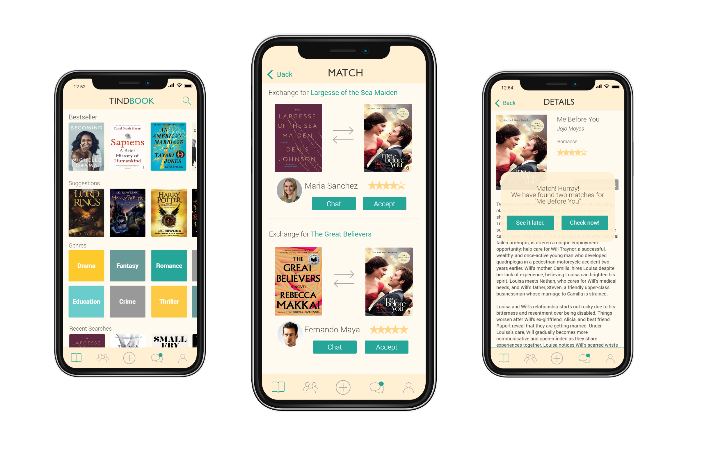
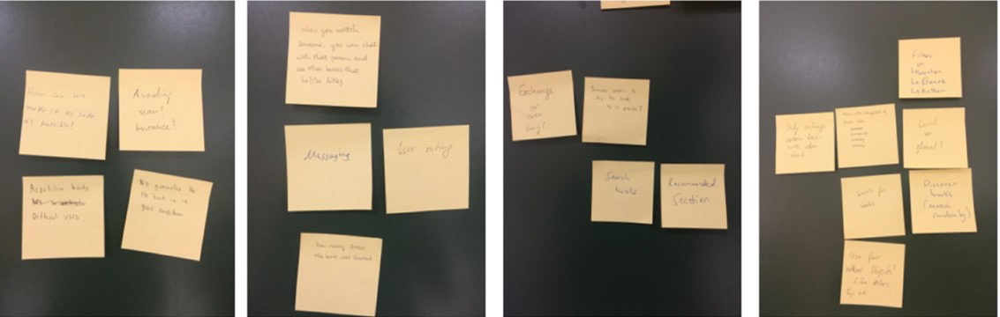

#1. What was done in this project?
The prototype was an academic project which was developed in the course User Experience and Mobile Interaction at the Universidad Politécnica de Madrid. The goal was to learn the use of different design methodologies and prototyping tools.This project was in collaboration with other three master students.

#2. Interviews
In class we already had to decided on a problem statement for our prototype, so we decided on the following: “How might we help people with exchanging books and making connections with other readers?”.
Before thinking about any solution for our problem, we performed interviews to get a better understanding about the problemspace. 21 readers provided us answers to the following and more questions:
From these interviews we derived the following conclusions:
We detected two potential user segments. Readers who mainly want to exchange books and readers who want to meet new people with the same interests. For each of these segments, we create an empathy map and a value proposition canvas.


#3. Ideation
The ideation phase mainly consisted of performing a brainstorming session and subsequently creating an affinity diagram. Our resulting idea was to create a platform on which people can indicate their interests in books by swiping them left or right, similar to Tinder. Furthermore, we wanted to provide virtual book clubs, so readers can exchange thoughts and get into contact. However, based on the interviews we realized that readers will most likely search directly for a book that was recommended to them by friends or family. For this reason, we decided to not include the swiping function in our prototype, but a directed manual search.

#4. Design and prototyping
To begin the prototyping process, we created a user journey map to better understand the emotions a user would go through when using our application and detect the most crucial steps. The moment in which a match is found so two users can exchange their books is the one we identified as most crucial. For the design, we made sure that this step is as easily achievable as possible. Furthermore, we found out that having to create a profile as one of the first steps is too frustrating that early in the process, so we decided to delay this step to a later time. For our prototype, we created a mood board and we drew sketches of the screens. Then, we developed a high fidelity prototype with JustInMind.
Because the class was focussing on design methodologies, there was no usability evaluation for our prototype. However, we designed the prototype as if we would evaluate it afterward. That means we formulated two scenarios for the prototype. The first was one to exchange a romance book with the highest rated user and the second one was about joining a Harry Potter book club and writing a comment. The screenshots you can see here are all part of the first scenario since this was the part that I was responsible for.

#5. Conclusions
This prototype was the first time for me to use methods like the value proposition canvas and user journey map. Using these methods helped me to better understand their value and why they can be powerful tools when it comes to making design decisions. One exciting moment for me was, for example, when we found out that profile creation in an early stage of the user journey will most like have a negative impact on the adaption of our app.